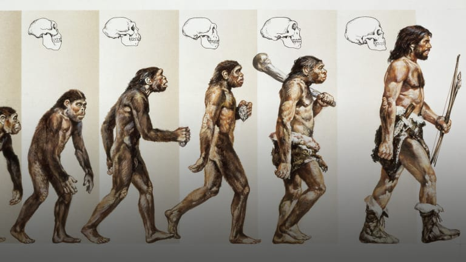

Humans (Homo sapiens) are the most populous and widespread species of primates, characterized by bipedality and large complex brains, which has allowed the development of advanced tools, culture and language. Humans create complex social structures composed of many cooperating and competing groups, from families and kinship networks to political states. Social interactions between humans  have established a wide variety of values, social norms, and rituals, which bolster human society. Curiosity and the human desire to understand and influence the environment and to explain and manipulate phenomena have motivated humanity's development of science, philosophy, mythology, religion, and other fields of knowledge.